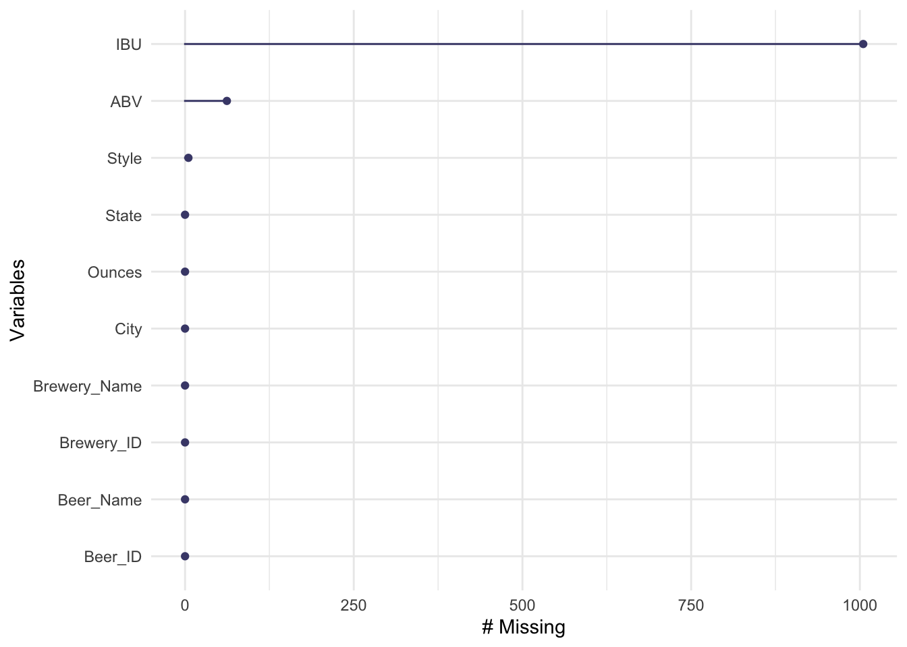
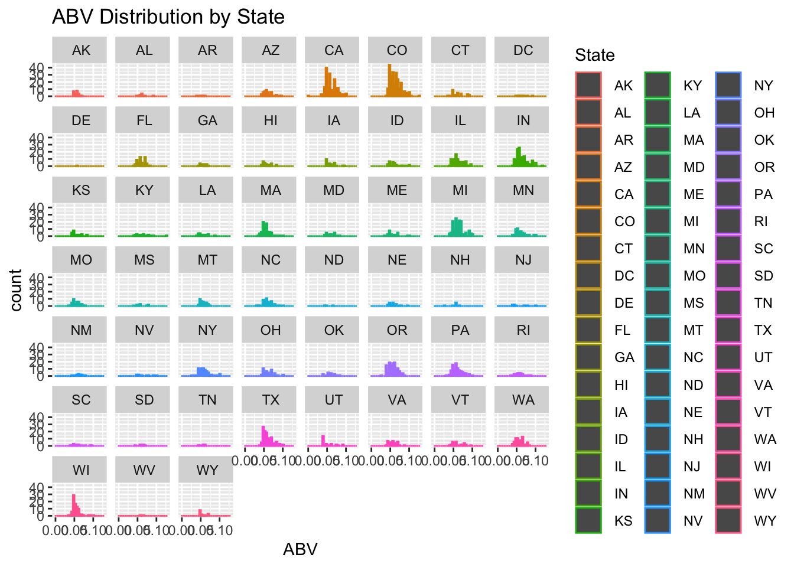
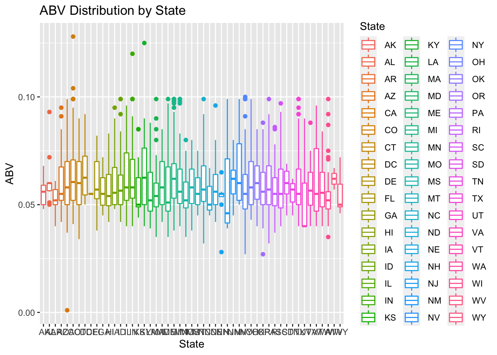
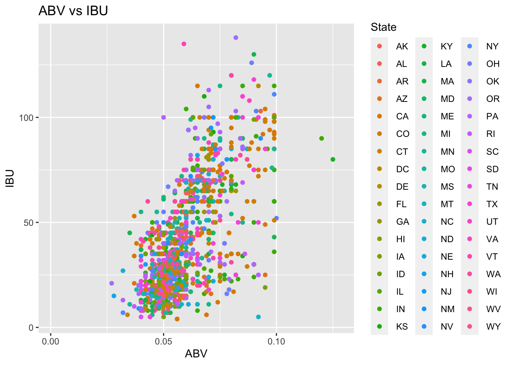
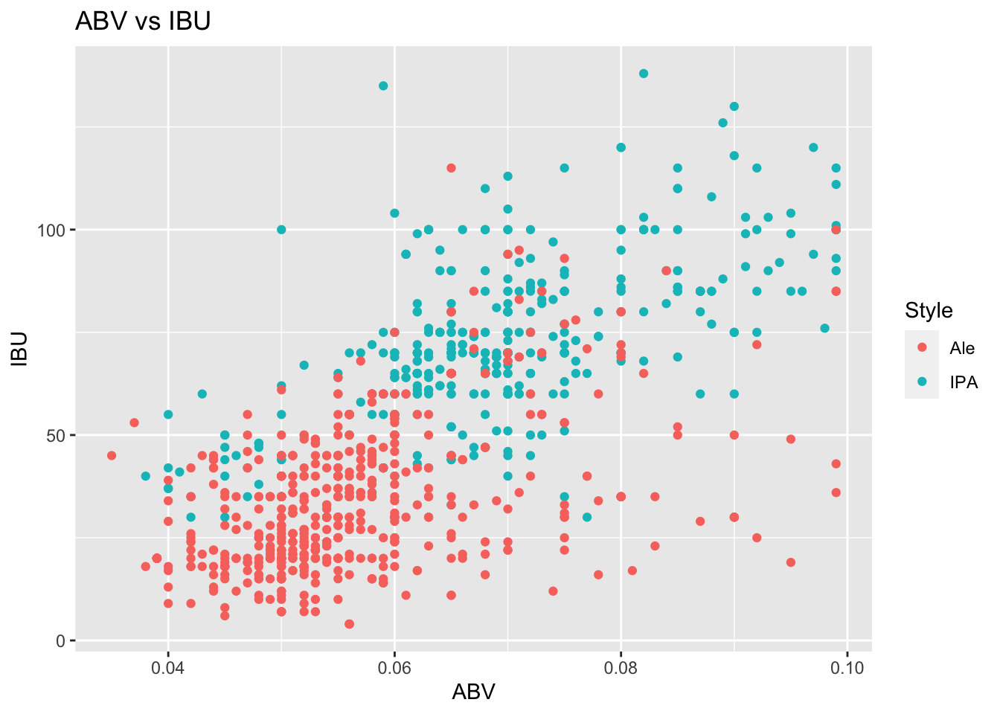

DS 3606 :: Case Study 1
Brandon Sucrese
6/25/2021
Introduction: Welcome to the brewery and beer analysis. The following code will walk through important discovers about beer. We will be looking at quantity of breweries and the distribution of beers’ alcohol content. We will also explore the relationship between alcohol content and bitterness as well as how the style of beer effects these variables. Lastly we will look into which states have the highest different in alcohol among their beers. Understanding how beer works and it’s finer details, always us to better understand beers in the future.
Code Summary: Reads in necessary libraries.
library(naniar)
library(tidyverse)
library(mice)
library(ggplot2)
library(htmlwidgets)
library(caTools)
library(class)
library(caret)
library(stats)
library(dplyr)
library(agricolae)Code Summary: Reads in the beer and breweries data sets. Sets the variables to the correct type and summaries the two data sets.
beer = read_csv("https://raw.githubusercontent.com/BivinSadler/MSDS_6306_Doing-Data-Science/Master/Unit%208%20and%209%20Case%20Study%201/Beers.csv") ##
## ── Column specification ─────────────────────────────────────────────────────────────────────
## cols(
## Name = col_character(),
## Beer_ID = col_double(),
## ABV = col_double(),
## IBU = col_double(),
## Brewery_id = col_double(),
## Style = col_character(),
## Ounces = col_double()
## )breweries = read.csv("https://raw.githubusercontent.com/BivinSadler/MSDS_6306_Doing-Data-Science/Master/Unit%208%20and%209%20Case%20Study%201/Breweries.csv")
breweries$State = as.factor(breweries$State) ## Sets the state variable to a factor
summary(beer) ## Summarizes the beer data set## Name Beer_ID ABV IBU Brewery_id
## Length:2410 Min. : 1.0 Min. :0.00100 Min. : 4.00 Min. : 1.0
## Class :character 1st Qu.: 808.2 1st Qu.:0.05000 1st Qu.: 21.00 1st Qu.: 94.0
## Mode :character Median :1453.5 Median :0.05600 Median : 35.00 Median :206.0
## Mean :1431.1 Mean :0.05977 Mean : 42.71 Mean :232.7
## 3rd Qu.:2075.8 3rd Qu.:0.06700 3rd Qu.: 64.00 3rd Qu.:367.0
## Max. :2692.0 Max. :0.12800 Max. :138.00 Max. :558.0
## NA's :62 NA's :1005
## Style Ounces
## Length:2410 Min. : 8.40
## Class :character 1st Qu.:12.00
## Mode :character Median :12.00
## Mean :13.59
## 3rd Qu.:16.00
## Max. :32.00
## summary(breweries) ## Summarizes the breweries data set## Brew_ID Name City State
## Min. : 1.0 Length:558 Length:558 CO : 47
## 1st Qu.:140.2 Class :character Class :character CA : 39
## Median :279.5 Mode :character Mode :character MI : 32
## Mean :279.5 OR : 29
## 3rd Qu.:418.8 TX : 28
## Max. :558.0 PA : 25
## (Other):358Code Summary: Plots the amount of breweries in each State.
breweries %>% ggplot(aes(x=reorder(State, State, function(x) -length(x)))) + geom_bar() + ggtitle("Breweries by State") + xlab("States")
Code Summary: Merges the beer and breweries data set together and relabels the data set.
beer_comp = merge(beer, breweries, by.x = "Brewery_id", by.y = "Brew_ID") ## Merges the beer and breweries data sets
colnames(beer_comp)[which(names(beer_comp) == "Name.x")] <- "Beer_Name" ## Renames column to Beer_Name
colnames(beer_comp)[which(names(beer_comp) == "Name.y")] <- "Brewery_Name" ## Renames column to Brewery_Name
colnames(beer_comp)[which(names(beer_comp) == "Brewery_id")] <- "Brewery_ID" ## Renames column to Brewery_IDCode Summary: Graphs missing data and shows first and last observations in the full beer data set.
imp_beer_comp = beer_comp ## Changes beer_comp to imp_beer_comp
gg_miss_var(imp_beer_comp) ## Graphs missing values by variable
head(imp_beer_comp, n=10) ## Displays first 10 observations## Brewery_ID Beer_Name Beer_ID ABV IBU Style Ounces
## 1 1 Get Together 2692 0.045 50 American IPA 16
## 2 1 Maggie's Leap 2691 0.049 26 Milk / Sweet Stout 16
## 3 1 Wall's End 2690 0.048 19 English Brown Ale 16
## 4 1 Pumpion 2689 0.060 38 Pumpkin Ale 16
## 5 1 Stronghold 2688 0.060 25 American Porter 16
## 6 1 Parapet ESB 2687 0.056 47 Extra Special / Strong Bitter (ESB) 16
## 7 2 Citra Ass Down 2686 0.080 68 American Double / Imperial IPA 16
## 8 2 London Balling 2685 0.125 80 English Barleywine 16
## 9 2 35 K 2684 0.077 25 Milk / Sweet Stout 16
## 10 2 A Beer 2683 0.042 42 American Pale Ale (APA) 16
## Brewery_Name City State
## 1 NorthGate Brewing Minneapolis MN
## 2 NorthGate Brewing Minneapolis MN
## 3 NorthGate Brewing Minneapolis MN
## 4 NorthGate Brewing Minneapolis MN
## 5 NorthGate Brewing Minneapolis MN
## 6 NorthGate Brewing Minneapolis MN
## 7 Against the Grain Brewery Louisville KY
## 8 Against the Grain Brewery Louisville KY
## 9 Against the Grain Brewery Louisville KY
## 10 Against the Grain Brewery Louisville KYtail(imp_beer_comp, n=10) ## Displays last 10 observations## Brewery_ID Beer_Name Beer_ID ABV IBU Style
## 2401 552 Ice Pick Ale 160 0.068 NA American IPA
## 2402 553 Mickey Finn's Amber Ale 174 0.056 NA American Amber / Red Ale
## 2403 554 Heiner Brau Kölsch 129 0.050 NA Kölsch
## 2404 555 BrewFarm Select Golden Lager 110 0.055 NA American Pale Lager
## 2405 556 Pilsner Ukiah 98 0.055 NA German Pilsener
## 2406 557 Heinnieweisse Weissebier 52 0.049 NA Hefeweizen
## 2407 557 Snapperhead IPA 51 0.068 NA American IPA
## 2408 557 Moo Thunder Stout 50 0.049 NA Milk / Sweet Stout
## 2409 557 Porkslap Pale Ale 49 0.043 NA American Pale Ale (APA)
## 2410 558 Urban Wilderness Pale Ale 30 0.049 NA English Pale Ale
## Ounces Brewery_Name City State
## 2401 12 Silverton Brewery Silverton CO
## 2402 12 Mickey Finn's Brewery Libertyville IL
## 2403 12 Covington Brewhouse Covington LA
## 2404 12 Dave's Brewfarm Wilson WI
## 2405 12 Ukiah Brewing Company Ukiah CA
## 2406 12 Butternuts Beer and Ale Garrattsville NY
## 2407 12 Butternuts Beer and Ale Garrattsville NY
## 2408 12 Butternuts Beer and Ale Garrattsville NY
## 2409 12 Butternuts Beer and Ale Garrattsville NY
## 2410 12 Sleeping Lady Brewing Company Anchorage AKCode Summary: Creates a new data set of Median ABV by state. Graphs and summarize this data set.
State_ABV = imp_beer_comp %>% filter(!is.na(imp_beer_comp$ABV)) ## Filters out any rows with missing values for ABV
State_ABV = aggregate(x = State_ABV$ABV, ## Creates data set of all the states and their corresponding median ABV values
by = list(State_ABV$State),
FUN = median)
colnames(State_ABV)[which(names(State_ABV) == "x")] <- "Median_ABV" ## Renames column to Median_ABV
colnames(State_ABV)[which(names(State_ABV) == "Group.1")] <- "State" ## Renames column to State
State_ABV %>% ggplot(aes(x=reorder(State, -Median_ABV), y=Median_ABV, color=State)) + ## Graphs Median ABV by State in order
geom_col() + ggtitle("Median ABV by State") + xlab("State") + ylab("Median ABV") a = which.max(State_ABV$Median_ABV) ## Finds and displays the state with the greatest median ABV
State_ABV[a,]## State Median_ABV
## 8 DC 0.0625b = which.min(State_ABV$Median_ABV) ## Finds and displays the state with the lowest median ABV
State_ABV[b,]## State Median_ABV
## 45 UT 0.04Code Summary: Finds and displays the beer with highest ABV and IBU values. Also finds and displays the beer with the lowest ABV and IBU values.
c = which.max(imp_beer_comp$ABV) ## Finds and displays beer with the highest ABV value
imp_beer_comp[c,]## Brewery_ID Beer_Name Beer_ID ABV IBU
## 375 52 Lee Hill Series Vol. 5 - Belgian Style Quadrupel Ale 2565 0.128 NA
## Style Ounces Brewery_Name City State
## 375 Quadrupel (Quad) 19.2 Upslope Brewing Company Boulder COd = which.max(imp_beer_comp$IBU) ## Finds and displays beer with the highest IBU value
imp_beer_comp[d,]## Brewery_ID Beer_Name Beer_ID ABV IBU Style
## 1857 375 Bitter Bitch Imperial IPA 980 0.082 138 American Double / Imperial IPA
## Ounces Brewery_Name City State
## 1857 12 Astoria Brewing Company Astoria ORe = which.min(imp_beer_comp$ABV) ## Finds and displays beer with the lowest ABV value
imp_beer_comp[c,]## Brewery_ID Beer_Name Beer_ID ABV IBU
## 375 52 Lee Hill Series Vol. 5 - Belgian Style Quadrupel Ale 2565 0.128 NA
## Style Ounces Brewery_Name City State
## 375 Quadrupel (Quad) 19.2 Upslope Brewing Company Boulder COf = which.min(imp_beer_comp$IBU) ## Finds and displays beer with the lowest IBU value
imp_beer_comp[d,]## Brewery_ID Beer_Name Beer_ID ABV IBU Style
## 1857 375 Bitter Bitch Imperial IPA 980 0.082 138 American Double / Imperial IPA
## Ounces Brewery_Name City State
## 1857 12 Astoria Brewing Company Astoria ORCode Summary: Summarizes the ABV value and plots ABV distribution by state.
summary(imp_beer_comp$ABV) ## Summarizes ABV data## Min. 1st Qu. Median Mean 3rd Qu. Max. NA's
## 0.00100 0.05000 0.05600 0.05977 0.06700 0.12800 62imp_beer_comp %>% ggplot(aes(x=ABV, color=State)) + geom_histogram() + ggtitle("ABV Distribution") ## Histogram plot of ABV distribution## `stat_bin()` using `bins = 30`. Pick better value with `binwidth`.## Warning: Removed 62 rows containing non-finite values (stat_bin).imp_beer_comp %>% ggplot(aes(x=ABV, color=State)) + geom_histogram() + ## Histogram plot of ABV distribution by state histogram
facet_wrap(~State) + ggtitle("ABV Distribution by State")## `stat_bin()` using `bins = 30`. Pick better value with `binwidth`.## Warning: Removed 62 rows containing non-finite values (stat_bin).
imp_beer_comp %>% ggplot(aes(x=State, y=ABV, color=State)) + geom_boxplot() + ggtitle("ABV Distribution by State") ## Boxplot of ABV distribution by state## Warning: Removed 62 rows containing non-finite values (stat_boxplot).
Code Summary: Plots the relationship between ABV and IBU
imp_beer_comp %>% ggplot(aes(x=ABV, y=IBU, color=State)) + geom_point() + ggtitle("ABV vs IBU") ## Scatter plot comparing ABV and IBU (Points colored by state)## Warning: Removed 1005 rows containing missing values (geom_point).
imp_beer_comp %>% ggplot(aes(x=ABV, y=IBU)) + geom_point() + ggtitle("ABV vs IBU") + geom_smooth(method = "lm") ## Scatter plot comparing ABV and IBU with a linear regression line## `geom_smooth()` using formula 'y ~ x'## Warning: Removed 1005 rows containing non-finite values (stat_smooth).
## Warning: Removed 1005 rows containing missing values (geom_point).
Code Summary: Creates a data set of just IPA and Ale style of beers and plots this new data.
IPA_Beer = imp_beer_comp %>% filter(str_detect(imp_beer_comp$Style, "IPA")) ## Creates data set of just IPA beers
IPA_Beer$Style = "IPA"
Ale_Beer = imp_beer_comp %>% filter(str_detect(imp_beer_comp$Style, "Ale")) ## Creates data set of just Ale beers
Ale_Beer$Style = "Ale"
IPA_Ale_Beer = rbind(IPA_Beer, Ale_Beer) ## Combines the IPA and Ale beer data sets together
IPA_Ale_Beer = na.omit(IPA_Ale_Beer) ## Removes any missing values from the data set
IPA_Ale_Beer %>% ggplot(aes(x=ABV, y=IBU, color=Style)) + geom_point() + ggtitle("ABV vs IBU") ## Scatter plot of IBU and ABV, style of Beers are colored
Code Summary: Splits the data into a training and test set. Runs a KNN classification model on the IPA and Ale beer data set.
set.seed(1) ## Sets the seed
sample = sample.split(IPA_Ale_Beer[,1], SplitRatio = .70) ## Splits the data using 30/70 ratio
beer_train = subset(IPA_Ale_Beer, sample == TRUE) ## Creates training set
beer_test = subset(IPA_Ale_Beer, sample == FALSE) ## Creates test set
v1 = beer_train[,6] ## Creates classifiers references of IBA and IBU
pred = knn(beer_train[,c('ABV', 'IBU')], beer_test[,c('ABV', 'IBU')], v1, k=2, prob = TRUE) ## Creates data set of predictions using the KNN model for the style of beers (IPA vs Ale)
actual = beer_test$Style ## Creates data set of the actual style of the beers
confusionMatrix(pred,as.factor(actual)) ## Creates a confusion matrix of the predicted and actual style of the beers## Confusion Matrix and Statistics
##
## Reference
## Prediction Ale IPA
## Ale 148 20
## IPA 26 80
##
## Accuracy : 0.8321
## 95% CI : (0.7825, 0.8744)
## No Information Rate : 0.635
## P-Value [Acc > NIR] : 5.515e-13
##
## Kappa : 0.6424
##
## Mcnemar's Test P-Value : 0.461
##
## Sensitivity : 0.8506
## Specificity : 0.8000
## Pos Pred Value : 0.8810
## Neg Pred Value : 0.7547
## Prevalence : 0.6350
## Detection Rate : 0.5401
## Detection Prevalence : 0.6131
## Balanced Accuracy : 0.8253
##
## 'Positive' Class : Ale
## Code Summary: Runs an ANOVA and Tukey test to determine which States have significant difference in ABV.
anova_beer = imp_beer_comp %>% filter(!is.na(imp_beer_comp$ABV)) ## Filters out all NA values in ABV
anova_results = aov(ABV ~ State, data = anova_beer) ## ANOVA test for ABV between all States
summary(anova_results) ## Summarizes the ANOVA results (results are significant)## Df Sum Sq Mean Sq F value Pr(>F)
## State 50 0.0218 0.0004359 2.451 9.07e-08 ***
## Residuals 2297 0.4086 0.0001779
## ---
## Signif. codes: 0 '***' 0.001 '**' 0.01 '*' 0.05 '.' 0.1 ' ' 1HSD_results<-HSD.test(anova_results,"State", group=FALSE) ## Runs Tukey pairwise comparison test
state_comparison = HSD_results$comparison ## Makes data set related to comparisons including pvalues
sign_comp = filter(state_comparison, pvalue <= .05) ## Makes data set of only comparison at are significant (pvalues <= 0.5)
print(sign_comp) ## Prints all significant comparisons## difference pvalue signif. LCL UCL
## CA - WI 0.007023594 0.0498 * 2.080796e-06 0.0140451073
## CO - MA 0.007689073 0.0063 ** 8.874533e-04 0.0144906931
## CO - OR 0.006308000 0.0153 * 4.532161e-04 0.0121627839
## CO - UT 0.011487385 0.0264 * 4.740684e-04 0.0225007008
## CO - WI 0.009313176 0.0000 *** 2.602548e-03 0.0160238047
## IN - MA 0.007711234 0.0306 * 2.488927e-04 0.0151735748
## IN - UT 0.011509545 0.0454 * 7.636388e-05 0.0229427265
## IN - WI 0.009335337 0.0005 *** 1.955836e-03 0.0167148379
## MA - MI -0.007694557 0.0239 * -1.502622e-02 -0.0003628883
## MI - UT 0.011492868 0.0416 * 1.445439e-04 0.0228411922
## MI - WI 0.009318660 0.0003 *** 2.071325e-03 0.0165659945